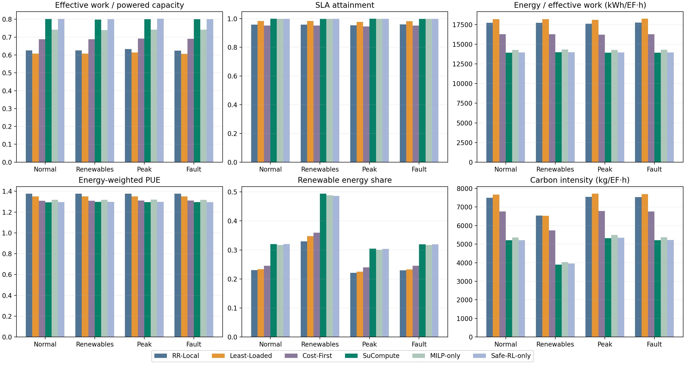
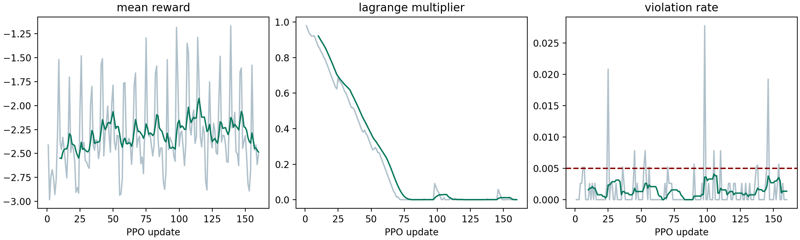

2026 江苏“人工智能+”创新应用大赛
“三苏”创新应用赛道 · AI-JIANGSU-Q36
苏算绿枢
SuCompute-Opt
佐证材料
仿真评测 · 权重说明 · 边车部署方案
seed 313四场景 × 168 小时
0.0957 秒本次滚动规划最长
0.0629 秒本次故障编排最长
苏算绿枢 · SuCompute-Opt佐证材料
两次命令，两套不能混用的模型
评测在 02-sansu-computing-dispatch 目录执行。依赖见 requirements.txt。本次使用仓库内已训练权重，没有重训。
- python weights/verify_weights.py
- python scripts/run_baselines.py --seed 313
- python benchmarks/run_benchmark.py --seed 313 --workers 2 --out <目录>
第一条检查五份权重的 SHA-256、ONNX 与 PyTorch logits，并做一次卷积前向。第二条只跑小时级 Gym 的 random 和 least-loaded greedy。第三条才产生 RR-Local、Least-Loaded、Cost-First、SuCompute、MILP-only、Safe-RL-only。
| 沙盘 | 步长 | 功率系数 | 碳因子 | 策略 |
|---|
| js_computesim | 1 小时 | 1,000 kW/EFlops | 分省年平均 | random、greedy |
| backend 五分钟引擎 | 5 分钟 | 10,000 kW/EF | 演示值 0.55 | 六策略，含三条基线 |
本次 verify 输出：Verified 5 hashes, 38987 bytes; max logit error 3.81e-06; forecast (24, 16, 2)。运行环境见 results_summary.json：Python 3.12.3，x86_64，scipy 1.15.2，torch 2.7.0+cpu。
逐小时 CSV 的 SHA-256 本次为 034b8c871e44310fd2f1c5131979a8ad1418e328e1577e137b6c8e3b486626d7。仓库冻结 benchmarks/results_detail.csv 为 07625d6e37ac223cf1d6b936b6cc3b972d0b16c0ceb32d21cefc413e09437f7d。周报表四舍五入一致，但哈希不同，原因见后文，不以冻结哈希冒充本次复现。
苏算绿枢 · SuCompute-Opt佐证材料
六策略周指标
四个场景等权。有效在线利用率 = 按 η 折算的有效工作量 / 含保活的已通电容量时。SLA 分母是到达任务数，拒单计入违约。国产有效份额的约束下限是 30%，表中是实际份额。
| 策略 | 利用率 | SLA | kWh/EF·h | PUE | 绿电 | 碳强度 | 高峰 SLA | 国产份额 |
|---|
| RR-Local | 62.72% | 95.72% | 17705.0 | 1.3760 | 25.26% | 7277.5 | 92.64% | 56.30% |
| Least-Loaded | 60.92% | 98.13% | 18181.2 | 1.3497 | 25.98% | 7401.3 | 97.04% | 54.79% |
| Cost-First | 68.98% | 94.97% | 16271.5 | 1.3093 | 27.26% | 6509.9 | 93.69% | 56.93% |
| SuCompute | 80.01% | 99.83% | 13945.7 | 1.2957 | 35.95% | 4911.9 | 99.80% | 52.19% |
| MILP-only | 74.10% | 99.83% | 14298.4 | 1.3177 | 35.57% | 5066.2 | 99.81% | 52.20% |
| Safe-RL-only | 80.14% | 99.81% | 13954.4 | 1.2965 | 35.71% | 4933.7 | 99.76% | 51.83% |
高峰时段为每日 09–11 与 17–19 时到达的任务。碳强度单位是 kgCO₂/EF·h。

四条策略的中文图，数值来自本次 results_summary.json。横轴依次为 RR-Local、Least-Loaded、Cost-First、SuCompute。消融留在上表。
苏算绿枢 · SuCompute-Opt佐证材料
脚本直接保存的对比图
下图是 benchmarks/run_benchmark.py 写出的 comparison.png，没有在画布上改数。英文标题是脚本原文。六组柱从左到右为 RR-Local、Least-Loaded、Cost-First、SuCompute、MILP-only、Safe-RL-only。横轴四个场景为常规工作日、绿电大发、尖峰保电、故障压测。

同一脚本还写出 training.png，见权重一节。周指标的中文读数在上一页和下一页。
苏算绿枢 · SuCompute-Opt佐证材料
相对差和脚本里的下限
| 对照 | 利用率 | SLA 百分点 | 能耗 | PUE | 绿电 | 碳强度 |
|---|
| RR-Local | +27.57% | +4.12 | +21.23% | +0.0803 | +42.31% | +32.51% |
| Least-Loaded | +31.33% | +1.70 | +23.30% | +0.0540 | +38.36% | +33.63% |
| Cost-First | +15.99% | +4.87 | +14.29% | +0.0136 | +31.90% | +24.55% |
| MILP-only | +7.97% | +0.01 | +2.47% | +0.0220 | +1.08% | +3.05% |
| Safe-RL-only | -0.16% | +0.03 | +0.06% | +0.0007 | +0.67% | +0.44% |
利用率、能耗、绿电、碳强度是相对变化。SLA 是百分点差。PUE 是绝对差。能耗列的正号表示苏算绿枢更低。
| 脚本中的下限 | 本次印出值 | 脚本结论 |
|---|
| 利用率 +15%～22% | 27.57% | 达到 |
| 各场景 SLA ≥99.2% | 99.80% | 达到 |
| 单位能耗降低 12%～18% | 21.23% | 达到 |
| 有效在线利用率 ≥78% | 80.01% | 达到 |
| 绿电相对提升 18%～25% | 42.31% | 达到 |
| 碳强度降低 15%～22% | 32.51% | 达到 |
| 加权 PUE 降低 ≥0.06 | 0.0803 | 达到 |
| 最长故障编排 ≤3 秒 | 0.0629 秒 | 达到 |
“达到”是脚本相对 RR-Local 的下限判断，作用域是这次合成周。最后一行的秒数是本机墙钟，不是冻结报告里的 0.0891 / 0.0803。
苏算绿枢 · SuCompute-Opt佐证材料
移峰、重排和本机墙钟
MILP-only 保留同一套滚动计划和重排，用配额贪心代替 PPO。Safe-RL-only 加载同一个 PPO，但没有预报、移峰和逐小时重排。批任务“推迟至少 2 小时”只统计预训练和微调里首次开工推迟不少于 24 个五分钟槽的作业。
| 场景 | 策略 | 推迟≥2h | 重排次数 | 高峰 SLA | 全装机有效利用率 |
|---|
| normal_weekday | SuCompute | 3305 | 1354 | 99.83% | 32.38% |
| normal_weekday | MILP-only | 3060 | 2334 | 99.83% | 32.33% |
| normal_weekday | Safe-RL-only | 0 | 0 | 99.78% | 32.36% |
| high_renewable | SuCompute | 3485 | 1152 | 99.76% | 32.34% |
| high_renewable | MILP-only | 3144 | 1967 | 99.78% | 32.33% |
| high_renewable | Safe-RL-only | 0 | 0 | 99.73% | 32.34% |
| peak_shaving | SuCompute | 3508 | 1470 | 99.82% | 34.27% |
| peak_shaving | MILP-only | 3327 | 2467 | 99.84% | 34.22% |
| peak_shaving | Safe-RL-only | 0 | 0 | 99.78% | 34.20% |
| fault_stress | SuCompute | 3299 | 1402 | 99.80% | 32.34% |
| fault_stress | MILP-only | 3051 | 2475 | 99.80% | 32.31% |
| fault_stress | Safe-RL-only | 0 | 0 | 99.74% | 32.35% |
Safe-RL-only 的推迟和重排为 0，因为它不移动批任务的开工时刻。全装机口径的分母含未通电容量，所以远低于“有效在线利用率”。
本次全体滚动规划最长 0.0957 秒，出现在故障场景的 MILP-only。SuCompute 在故障场景的编排最长 0.0629 秒，solve_max_s 为 0.0681 秒，measured_solves = 168。故障轨迹的 elapsed_s 含计划重算和内存中的切流，不含生产环境的检查点字节复制。
仓库冻结 results_report.md 写的是规划 0.0891 秒、故障编排 0.0803 秒。那是生成冻结包的机器的墙钟。本机是 4 vCPU 的 Intel Xeon 虚拟机，两个数都变了，两个都仍小于脚本里的 3 秒和 1 秒门槛。引用时间以本页为准。
苏算绿枢 · SuCompute-Opt佐证材料
小时级 Gym 是另一张表
scripts/run_baselines.py 不产生 RR-Local、Cost-First 或 SuCompute。random 与 greedy 都不看电价和绿电，所以绿电大发日的放置与常规工作日相同，只有碳和绿电份额变化。绝对 MWh、吨和万元使用 1,000 kW/EFlops，脚本原文写明这不是全省能源平衡。
| 场景 | 策略 | 完成比 | SLA 违约 | 平均利用率 | 加权 PUE | 绿电份额 |
|---|
| weekday | random | 0.8109 | 0.1891 | 0.8873 | 37615.8845 | 0.0280 |
| weekday | greedy | 0.9404 | 0.0596 | 0.8464 | 36517.3900 | 0.0288 |
| green_surplus | random | 0.8109 | 0.1891 | 0.8873 | 36144.9595 | 0.0660 |
| green_surplus | greedy | 0.9404 | 0.0596 | 0.8464 | 35046.4324 | 0.0679 |
| peak_conservation | random | 0.6874 | 0.3126 | 0.9065 | 36021.1673 | 0.0292 |
| peak_conservation | greedy | 0.8043 | 0.1957 | 0.8921 | 35810.8230 | 0.0294 |
| node_failure | random | 0.8049 | 0.1951 | 0.8913 | 37415.1237 | 0.0281 |
| node_failure | greedy | 0.9337 | 0.0663 | 0.8541 | 36451.9217 | 0.0289 |
完成比是 served_ratio。SLA 违约是 sla_violation_ratio，方向与五分钟引擎的“SLA 达标率”相反。
常规工作日 greedy 的完成比是 0.9404，违约 0.0596；random 的完成比是 0.8109，违约 0.1891。尖峰保电日 greedy 违约升到 0.1957。这些数只说明该 Gym 在种子 313 下的放置，不能拿来和支持卷积预报的五分钟 SLA 99.83% 相减。
小时环境的预测接口当前等于生成器真值。把它换成真实预报器时，替换 planning_snapshot() 的到达数组即可。这次基线复现没有做这件替换。
苏算绿枢 · SuCompute-Opt佐证材料
权重包是时间卷积和小型 PPO
manifest.json 的 version 为 2。预报器是季节残差 TCN：Conv1d(4→24, k=5) 、Conv1d(24→16, k=3, dilation=2)、Conv1d(16→2, k=1)，残差接在滞后 24 小时与 48 小时的平均上，输出经 clamp 不低于 0。策略网是两层 Tanh 的候选打分器和价值头，输入 15 维特征，部署前还要加上 dispatch_bias 和可行性掩码。
| 文件 | 字节 | SHA-256 前 16 位 | 说明 |
|---|
| policy.pt | 9,669 | fc11e917392a9140… | PPO actor and critic state_dict |
| forecast.pt | 9,621 | 4153bc439493ff61… | seasonal residual TCN state_dict |
| policy.onnx | 5,437 | 2f7b6d8032225469… | portable actor logits, opset 17 |
| forecast_metrics.json | 707 | 5ccb04478642254c… | independent train/validation MAE and positive-target MAPE |
| ppo_training.csv | 8,539 | 6d3543ee4dd1219e… | on-policy sample reward, violation rate and projected multiplier |
五份文件合计 38987 字节，低于仓库设定的 15 MB 上限。本次校验：Verified 5 hashes, 38987 bytes; max logit error 3.81e-06; forecast (24, 16, 2)。ONNX 只导出策略 logits，预报仍用 PyTorch。
特征顺序与代码 FEATURES 一致：eta、tariff、green_fraction、pue_excess、pool_fill、marginal_powered_efh_per_efh、latency_ratio、cross、domestic、quota、sla_risk、wait_fraction_of_6h、energy_per_work、available、urgent。
不要把这套权重描述成 PatchTST 或 LightGBM。research.md 和 solution.md 里出现过这两个名字，是选型笔记，不是已发布权重。重新训练的入口是 benchmarks/train_forecast.py 与 train_policy.py，训练后再跑 verify_weights.py --release。本次没有执行训练。
苏算绿枢 · SuCompute-Opt佐证材料
预报误差和 PPO 曲线
| 划分 | 变量 | MAE | MAPE | 非零样本 |
|---|
| 训练 | 到达（作业/小时） | 2.042 | 43.71% | 137,010 |
| 训练 | 绿电比例 | 0.0198 | 12.43% | 152,064 |
| 验证 | 到达（作业/小时） | 2.086 | 43.96% | 45,179 |
| 验证 | 绿电比例 | 0.0204 | 12.54% | 50,688 |
验证种子 72。评测周使用种子 313，不在这张误差表里。

run_benchmark.py 按 weights/ppo_training.csv 绘制。绿线是 10 次更新的滑动平均，红虚线是违约率 0.5%。
验证集到达 MAPE 43.96% 说明卷积只抓住了日周期的一部分。周评测里的移峰仍然使用这份预报，因此利用率优势不能解释成“预报已经准确”。
苏算绿枢 · SuCompute-Opt佐证材料
边车怎么接到省平台：现在能做的和还不能做的
部署形态是策略边车，不是替换省级调度核心。计算放在只读副本旁边：读指标、出建议、写凭证。执行仍走平台现有队列。本仓库的 server.py 是这个边车的本地、无状态版本，注释写明 Optional stateless sidecar。
本机已经能启动的部分
- 用 CPU 加载 policy.onnx 与 forecast.pt。本次校验在 CPUExecutionProvider 上完成，logit 最大误差 3.81e-06。
- POST /api/v1/simulate 在独立内存日历上从种子重放，默认种子 313，小时数 1–168。
- POST /api/v1/fault/inject 注入离线、容量损失或 PUE 抬升。
- POST /api/v1/copilot/command 解析中文指令并重算。
- POST /api/v1/ledger 与 /api/v1/ledger/csv 导出凭证。
三阶段的进入条件（计划，尚未开始）
- 影子：平台提供至少 14 天只读时序，边车每天出一份与现行策略并列的建议。不对生产队列写指令。
- 人工确认：建议单包含任务标识、目的节点、预计时延圈、演示电价下的电费和凭证哈希。值班员否决时保留否决原因。
- 闭环：先在书面变更里限定任务类型和回退开关。生产检查点复制的耗时要单独计量，不能沿用仿真 elapsed_s。
仓库没有省平台或 13 个地市子门户的接口文档。上表的进入条件是对接方案，不是已完成的联调记录。
苏算绿枢 · SuCompute-Opt佐证材料
建议映射、一张真实凭证和上线前要改的默认值
下表是边车希望读取的量。右列只说明仓库里用什么字段模拟它。省平台的真实字段名待联调时替换，不能把仿真字段名当成接口规范。
| 边车要读的量 | 仿真里对应的来源 | 对接状态 |
|---|
| 任务类型、到达、时延上限、截止期 | Trace 的五类任务 | 待联调 |
| 节点健康、PUE、队列 | world.health 与功率模型 | 待联调 |
| 分时电价 | weather() 演示曲线；公告价只在小时环境 | 待核实到户电价 |
| 绿电可用功率 | 场景参数，不是机房电表 | 待联调 |
| 跨域带宽与时延 | 设计矩阵 1/5/10 ms，带宽为假设 | 待核实 |
| 回写调度指令 | 无。API 不发生产指令 | 阶段 1 保持不回写 |
本次账本样例取自这次 run_benchmark 写出的 ledger_sample.json，不是冻结前端包。常规工作日、SuCompute、任务 1：HPC，来源南京，槽 0–14，节点盐城 / DCU，动作概率 0.975，绿电份额 98.07%，PUE 1.157。有效 1.984 EF·h，分摊电量 27,600 kWh，演示电价下 10,212 元，碳排 293.0 kg，相对全购电少 14,887 kg，SLA 满足。SHA-256 e699c16ae9430f01cab21b2efbe628acc9a1f5f99edbd2189af096163dafcc78。
这张凭证的电量和电费随 10,000 kW/EF 放大，不能当成账单或碳资产。server.py 当前把 CORS 设为允许任意来源，只适合本机演示；接到平台前必须改成指定源，并把 LLM 密钥留在环境变量里，不写入仓库。
苏算绿枢 · SuCompute-Opt佐证材料
验收时对照什么
- 权重：verify_weights.py 通过，五份 SHA-256 与 manifest.json 一致。
- 周指标：复跑 run_benchmark.py 后，四场景等权表与当时的 results_report.md 一致；墙钟允许变化，并写明主机。
- 哈希：逐小时 CSV 的 SHA-256 与当次 summary 的 detail_sha256 一致。不要要求它等于冻结包的 07625d6e37ac223cf1d6b936b6cc3b972d0b16c0ceb32d21cefc413e09437f7d，除非在同一数值路径上复现到逐小时电量。
- 账本：抽一条凭证，用 backend.report.receipt_hash 重算。展示字段 selection_reason 不进入哈希。
- 影子试点：连续只读运行，建议单可导出 CSV，生产队列无写入。这项尚未开始。
本次复现已经完成前三项里的权重校验和周评测。逐小时哈希等于本次 summary，不等于冻结包。第四项的哈希算法在代码和 API_CONTRACT 里，计划书引用的那条样例来自本次账本文件。第五项没有环境，不能勾。
PPT、录屏和网盘链接不在这份佐证里。优化幅度若没有出现在本次 results_report.md，就不能写成已验证。